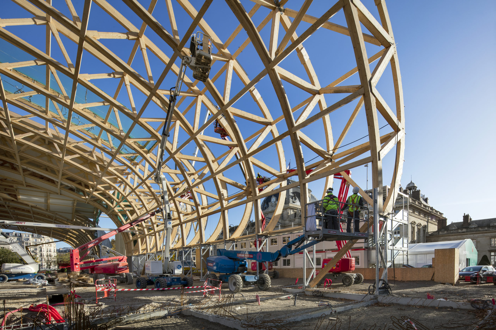
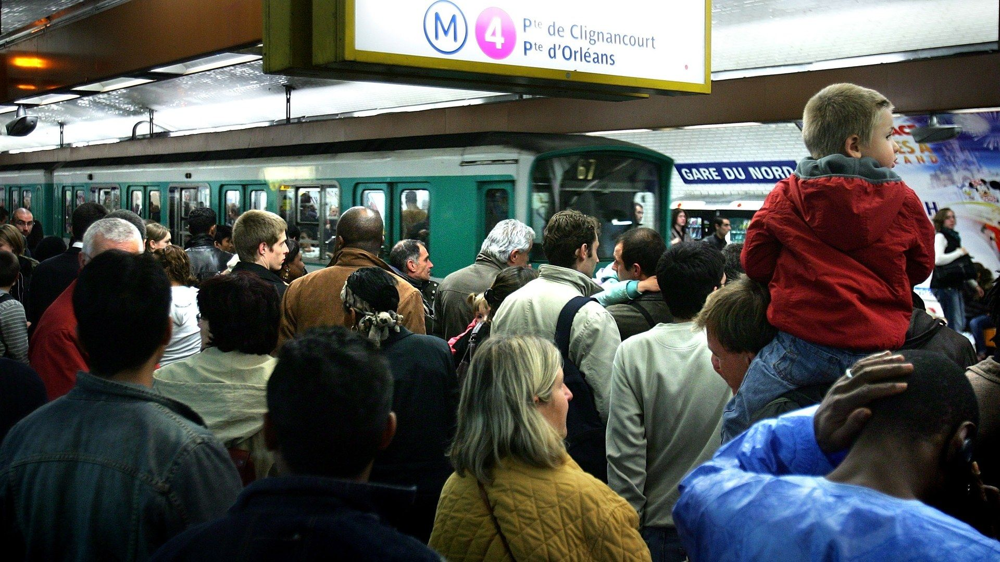
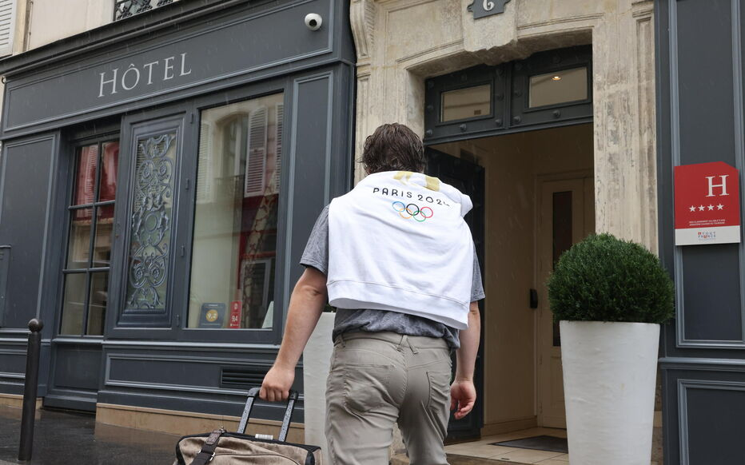
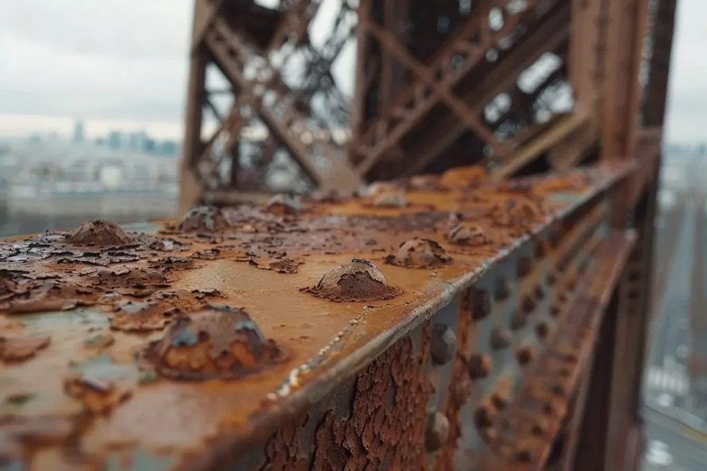

Défis
Nuisances environnementales et écologiques
Malgré les efforts déployés pour rendre les JO plus durables, leur empreinte écologique a suscité des critiques. L’installation de structures temporaires, comme le stade de beach-volley au Champ-de-Mars, a soulevé des inquiétudes concernant leur impact sur les espaces naturels et les sites historiques. Le transport des matériaux nécessaires à la construction de ces infrastructures a également été pointé du doigt par les associations environnementales, qui déplorent l’empreinte carbone générée par l’événement.
De plus, la gestion des déchets et la consommation d'énergie, bien que partiellement compensées par des initiatives écologiques, n'ont pas suffi à apaiser les inquiétudes liées à l'impact global des Jeux sur l’environnement.
Saturation des infrastructures locales
La gestion des flux de visiteurs pendant les JO a entraîné une saturation des transports publics et des infrastructures routières, rendant les déplacements plus compliqués pour les habitants. Par exemple, la ligne 13 du métro a été particulièrement congestionnée, créant des désagréments pour les habitants de banlieue comme ceux de Saint-Ouen ou de La Courneuve.
De plus, la fermeture partielle de certains espaces publics comme le parc du Château de Versailles a privé les riverains de lieux de détente essentiels, créant un sentiment de frustration parmi les résidents.
Hausse des coûts de la vie
L’arrivée massive de visiteurs a entraîné une augmentation temporaire des prix dans plusieurs secteurs, notamment l’hôtellerie, la restauration et les services. À Paris et en périphérie, les prix dans les restaurants ont grimpé, rendant l’accès à des repas abordables plus difficile pour les habitants. En outre, les loyers ont connu une hausse, particulièrement dans des quartiers proches des sites olympiques comme la Porte de Versailles, ce qui a accentué les tensions sociales.
Ces augmentations ont été particulièrement ressenties par les ménages à faibles revenus, qui ont vu leur pouvoir d’achat diminuer pendant la période des Jeux, exacerbant le sentiment d’injustice sociale.
Risques pour le patrimoine historique
La forte affluence de visiteurs sur des sites historiques comme le Château de Versailles ou la Tour Eiffel a soulevé des inquiétudes quant à leur préservation. Bien que des mesures de protection aient été mises en place, des experts ont exprimé des préoccupations sur les possibles dégradations dues à l’usure ou aux aménagements temporaires réalisés pour l’événement. Le risque de surfréquentation sur ces monuments emblématiques demeure un sujet de débat.
Sentiment d’exclusion sociale
Malgré l’organisation des Jeux sur le sol français, une partie de la population s’est sentie exclue de l’événement, notamment en raison du coût élevé des billets pour les compétitions. Ces tarifs ont rendu difficile l’accès aux compétitions pour de nombreuses familles et habitants locaux.
De plus, le fort accent mis sur les visiteurs étrangers et les retombées économiques internationales a parfois laissé les populations locales avec le sentiment d’être spectateurs, et non acteurs, de cet événement mondial. Les résidents de certains quartiers, comme ceux de La Goutte d'Or ou de Château Rouge, ont ressenti que les bénéfices des JO étaient principalement orientés vers les touristes étrangers.